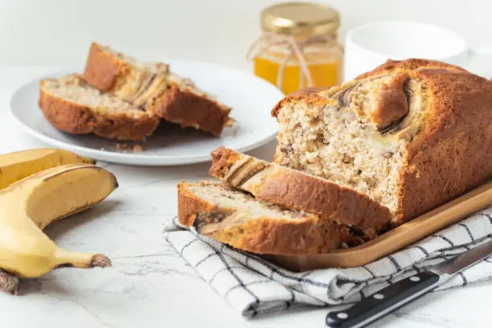

Banana Bread
Ingredients
- 1 3/4 cups all-purpose flour
- 1 cup granulated sugar
- 1/2 cup brown sugar
- 1 teaspoon baking soda
- 1/2 teaspoon salt
- 1/2 teaspoon ground cinnamon
- 3 ripe bananas, mashed
- 2 large eggs
- 1/3 cup vegetable oil
- 1/4 cup milk
- 1 teaspoon vanilla extract
- 1/2 cup chopped walnuts (optional)
- 1/2 cup chocolate chips (optional)
Instructions
- Preheat oven to 350°F (175°C). Grease a 9x5-inch loaf pan.
- In a large bowl, whisk together flour, granulated sugar, brown sugar, baking soda, salt, and cinnamon.
- In another bowl, mash the bananas until smooth.
- Add eggs, oil, milk, and vanilla to the mashed bananas. Mix well.
- Gradually add the wet ingredients to the dry ingredients, stirring until just combined.
- Fold in walnuts and chocolate chips if using.
- Pour batter into the prepared loaf pan.
- Bake for 55-65 minutes, or until a toothpick inserted in the center comes out clean.
- Let cool in the pan for 10 minutes, then remove from pan and cool completely on a wire rack.
- Slice and serve when completely cooled.